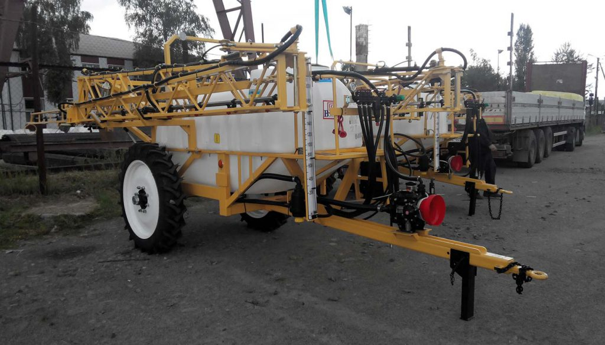

ODESSEY 2500-15
Plakanas konstrukcijas hidrauliskais stienis 22 metru garumā ar svārsta stabilizācijas mehānismu un hidromehānisko vibrāciju slāpēšanas sistēmu. Kāta un rāmja ražošana ietver smilšu strūklu, kam seko pulverkrāsošana, lai nodrošinātu drošu aizsardzību pret koroziju.
Paralēlogramma piekare ar diviem hidrauliskiem cilindriem ļauj vienmērīgi mainīt izlices augstumu no 0,7 līdz 1,85 metriem pat braukšanas laikā.
Stieņa aizsargmehānisms sadursmes gadījumā ar šķērsli ļauj stienim novirzīties horizontālā plaknē. Pabraucot garām šķērslim, stienis atgriežas sākotnējā stāvoklī.
Divi inžektoru maisītāji ar keramikas uzgaļiem, kas uzstādīti tvertnes apakšā, uztur nemainīgu darba šķidruma koncentrāciju.
| Darba | Transportēšanas | |
| Garums | 5000 mm | 6550 mm |
| Platums | Atkarībā no staru kūļa platuma | 2250 mm |
| Augstums | 2500 mm | 2200 mm |
| Tilpums | 2000 l | 2500 l |
| Masa (sausa) | 1410 kg | 1520 kg |
| Masa (pilna) | 3410 kg | 4020 kg |
| Klīrenss | 550 m | 550 m |